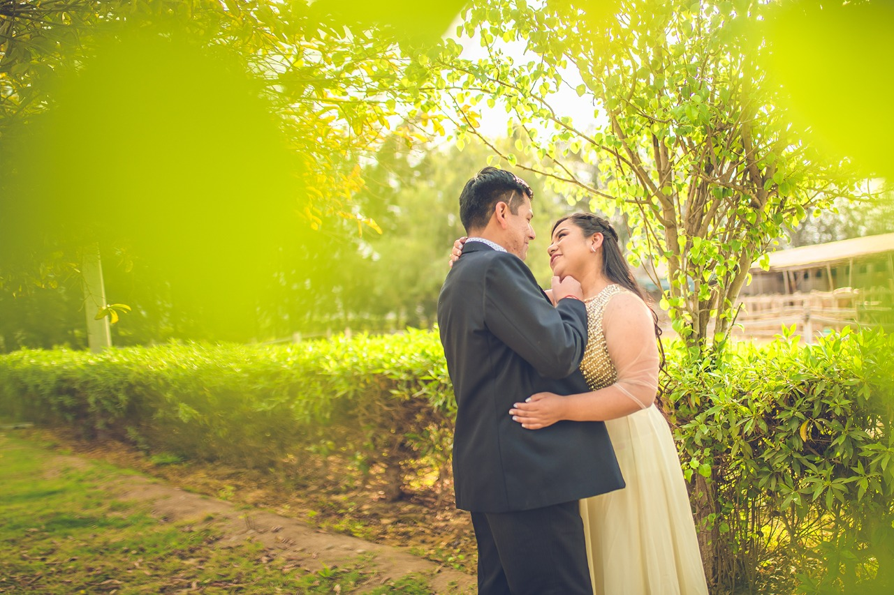
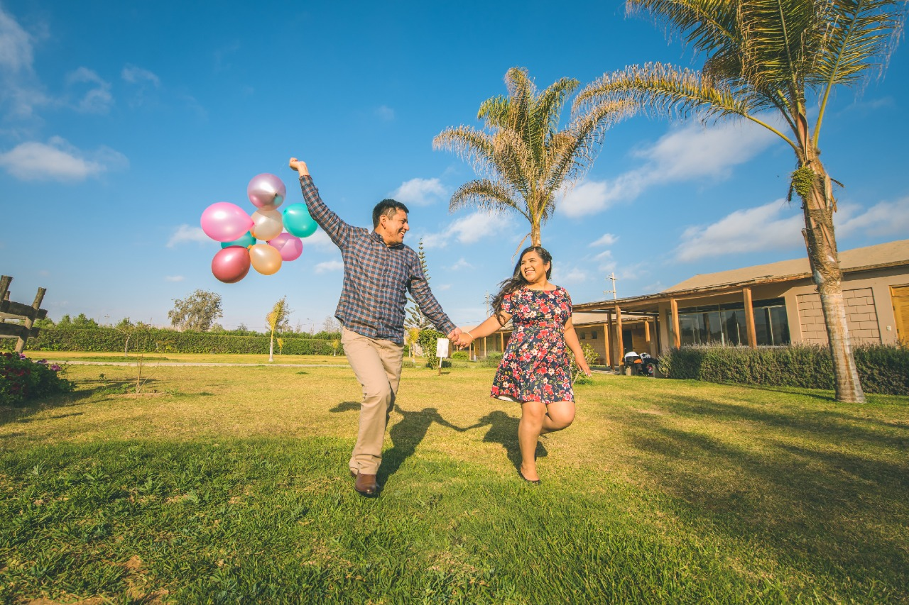
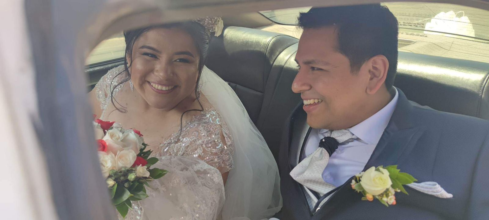
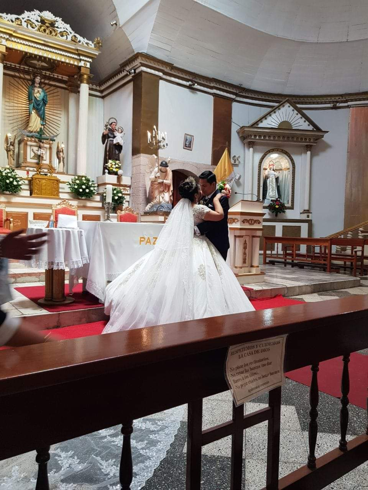
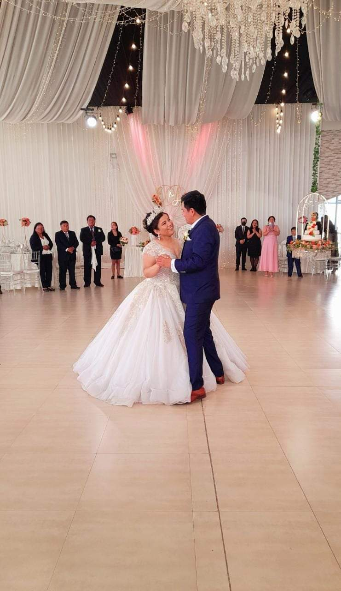
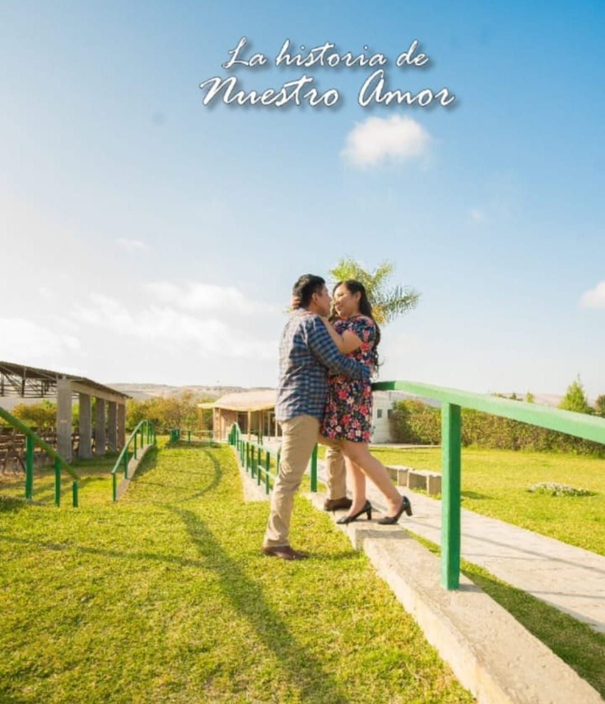
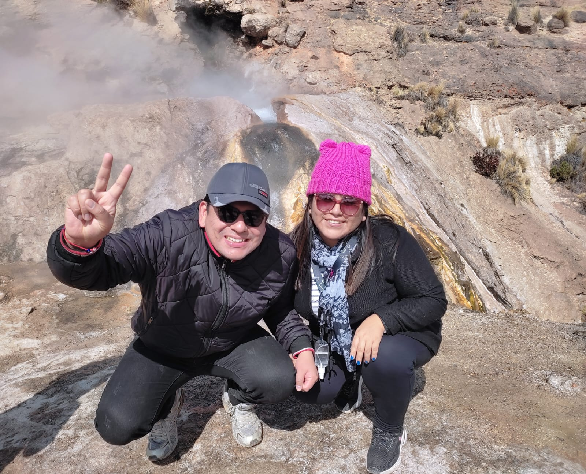

Bienvenidos a nuestra historia de Amor!!
1. Historia
Nuestra historia empezó hace 4 años, fue cuando me presentaron a todos del equipo en el trabajo lo vi y el era un hombre alto, apuesto tenia lentes para la vista el cual le hacia ver mas intelectual y sus vestimenta era casual tenia una sonrrisa hermosa y su mirada era penetrante, en el transcurso del trabajo fuimos conociendonos cada vez mas.
2. Declaración
Despues empezamos a salir fuera del trabajo el me invitaba a comer siempre conversabamos y me hacia bromas con sus ocurrencias nos reiamos a carcajadas el es conmigo muy atento.
Fue un 21 de Octubre en una heladeria, el estaba bien vestido con su camisa azul y pantalon jeans, su aroma era muy calido siempre se ponia contento cuando me veia aún me acuerdo que estaba nervioso, sin embargo le dije que debe atreverse y arriesgarse me tomo de la mano y me miro a los ojos sus palabras fueron Tu me gustas mucho quieres ser mi enamorada?.
Yo me puse nerviosa porque pense que no se iba atreverse, luego le dije que seria bueno conocernos más como amigos él no se dio por vencido y me dijo que quiere conocerme más pero como su enamorada yo tenia mucho miedo porque en el trabajo nuestros compañeros nos iban a molestar(puede desconcentrarnos) era mi primera vez que tenia un enamorado dentro del trabajo.
Sin embargo yo si sentia algo por el y SI acepte ser su enamorada.
Ambos estabamos nerviosos al salir de la heladeria me dio un beso fue cuando unimos nuestras almas luego fuimos a una iglesia que estaba cerca y pedir a Dios que bendiga nuestra realación.
3. Operaciones
El estaba triste porque tenia que operarse de un tumor en la hipofisis en su cabeza que le afectaba era la segunda vez y eso aveces lo ponia tenso y triste.
Yo tenia a mi hermano que ya habia pasado por una operación en la cabeza en el caso de el fue por un accidente asi que siempre le daba animos asi que el me dijo que quiere presentarme a su familia al inicio sentia que era muy pronto pero la fecha de su operación estaba cerca asi que acepte conocer a su familia fue un sábado estaba nervisa de conocer a su familia el nos llevo a un restaurante muy lindo estaba bien vestido con su camisa blanca y su pantalo de tela negro cuando me vio fue corriendo a abrazarme y me cargo luego me dio un beso me tomo de la mano y me presento a sus padres y hermana fueron muy amables su madre estaba un poco celosa, para operarse tuvo que viajar a otro departamento lo acompaño sus padres, cuando el se fue yo estaba muy nerviosa y triste lo unico que hacia era rezar para que todo le vaya bien luego me compre mi pasaje y me fui de viaje a su lado estuve con el cuidandolo por tres dias luego sus padres se quedaron con el gracias a dios la operación fue muy bien.
4. Viajes
Nuestro primer viaje fue cerca del mar un puerto era un pequeño pueblo muy acogedor llegamos en la noche.Al dia siguiente fuimos a pasear al malecon e hicimos un tour compramos algunas cosas.
Nuestro segundo viaje fue a un valle donde hay geiser se ubica a 4300 m.s.n.m. Sus aguas son temperadas y oscilan entre los 37°C y 80°C habían animales y lo bueno es que puedes hacer cocer tu huevo en el geiser el hizo un tik tok con sus ocurrencias.
Nuestro tercer viaje fue un poco mas lejos y largo por lo que me hizo un poco mal por el cambio de clima y me dio soroche, me tome pastilla pero al inicio no logre disfrutar el viaje luego se me paso el malestar al realizar el deporte canopy sentimos una adrenalina y el grito fuerte mi nombre diciendome que me ama me puse feliz al escucharlo luego fuimos a unos baños termales que tenian diferentes temperaturas fue muy relajante Se vienen mas viajes pronto...
5. Matrimonio
Fue uno de los momentos mas maravillosos en mi vida. Aún lo recuerso como si fuera ayer el me pidio que sea su novia me inivito a una cena muy intima fue hermoso habia velas y habian colocado nuestra musica luego me dijo cierra los ojos y me obsequio el anillo era hermoso todo fue muy bonito me emocione mucho.
Luego llegó el gran día de nuestro matrimonio estaba nerviosa y a la vez tan feliz de dar ese gran paso en mi vida porque es el hombre que amo y quiero compartir el resto de mi vida a su lado, mis padres se emocionaron mucho al verme con mi vestido y tiara me veia como una princesa todo fue muy bonito estabamos los dos muy felices porque estamos uniendo nuestro amor ante Dios y la Ley y tener muy pronto nuestra bendición y hacer crecer nuestra familia.
6. Familia
Yo le presente a mi familia el estaba nervioso pero les agrado a mis padres y hermanos. Se conocieron mas ambas familias por el acontecimiento de nuestro matrimonio y nos unimos mas.
Ahora nosotros somos una nueva familia porque muy pronto llegara un integrante mas a nuestra familia dios nos bendiga con un hermoso bebe sano y fuerte el cual lo vamos a amar mucho.
7. Fotos
      8. Videos